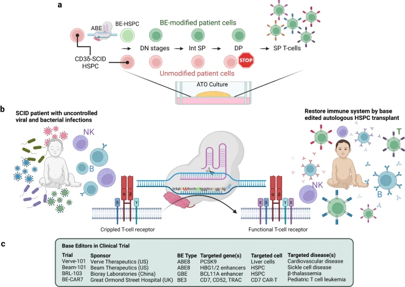

<!doctype index>
<index lang="en">
    <head>
        <meta charset="utf-8" />
        <meta
            name="viewport"
            content="width=device-width, initial-scale=1, shrink-to-fit=no"
        />
        <meta
            name="description"
            content="Detailed information about pharmacokinetic interactions in SCID treatment."
        />
        <meta name="author" content="Floris" />
        <link rel="icon" href="/docs/4.0/assets/img/favicons/favicon.ico" />

        <title>Influence on the immune system</title>

        <link
            rel="canonical"
            href="https://getbootstrap.com/docs/4.0/examples/album/"
        />

        <!-- Bootstrap core CSS -->
        <link href="../../dist/css/bootstrap.min.css" rel="stylesheet" />

        <!-- Custom styles for this template -->
        <link href="style.css" rel="stylesheet" />
    </head>

    <body>
        <header>
            <div class="collapse bg-dark" id="navbarHeader">
                <div class="container">
                    <div class="row">
                        <div class="col-sm-8 col-md-7 py-4">
                            <h4 class="text-white">About</h4>
                            <p class="text-muted">
                                 
                            </p>
                        </div>
                        <div class="col-sm-4 offset-md-1 py-4">
                            <h4 class="text-white">Contact</h4>
                            <ul class="list-unstyled">
                                <li>
                                    <a href="#" class="text-white"
                                        >Email us if you have any questions!</a>
                                </li>
                            </ul>
                        </div>
                    </div>
                </div>
            </div>
            <div class="navbar navbar-dark bg-dark box-shadow">
                <div class="container d-flex justify-content-between">
                    <a href="index.html" class="navbar-brand d-flex align-items-center">
                        <svg
                            xmlns="http://www.w3.org/2000/svg"
                            width="20"
                            height="20"
                            viewBox="0 0 24 24"
                            fill="none"
                            stroke="currentColor"
                            stroke-width="2"
                            stroke-linecap="round"
                            stroke-linejoin="round"
                            class="mr-2"
                        >
                            <path
                                d="M23 19a2 2 0 0 1-2 2H3a2 2 0 0 1-2-2V8a2 2 0 0 1 2-2h4l2-3h6l2 3h4a2 2 0 0 1 2 2z"
                            ></path>
                            <circle cx="12" cy="13" r="4"></circle>
                        </svg>
                        <strong>SCID</strong>
                    </a>
                    <button
                        class="navbar-toggler"
                        type="button"
                        data-toggle="collapse"
                        data-target="#navbarHeader"
                        aria-controls="navbarHeader"
                        aria-expanded="false"
                        aria-label="Toggle navigation"
                    >
                        <span class="navbar-toggler-icon"></span>
                    </button>
                </div>
            </div>
        </header>

        <main role="main">
            <section class="jumbotron text-center">
                <div class="container">
                    <h1 class="jumbotron-heading">
                        Influence on the immune system
                    </h1>
                    <p class="lead text-muted">
                       The immune system of patients with SCID is severly crippled, this also lead to the infamous "Bubble boy",
                       a small child with SCID who had to be isolated from the world in a plastic tent. <br>
                       There are fewer functional T-cells and
                       among other things, the antibody production capability of the B-cells is lessend.

                </div>
            </section>


            <div class="container">
                <div class="row">
                    <div class="col-md-12">
                        <h4>Overview: The various ways the immune system is changed:</h4>
                        <p>

                                                       <ul>
                                <li>Deficiency in T Cells</li>
                                <li>Impact on B Cells</li>
                                <li>Natural Killer Cell Dysfunction</li>
                                <li>Increased Susceptibility to Infections</li>
                            </ul>
                        </p>
                    </div>
                </div>

                <div class="row">
                    <div class="col-md-12">
                        <h2>Deficiency in T Cells (1)</h2>
                        <p>
                            In the case of Adenosine Deaminase (ADA) deficiency, ADA is an enzyme that plays an important role in purine metabolism by breaking down adenosine and deoxyadenosine. In individuals with ADA deficiency, these metabolites accumulate because they cannot be properly degraded. This accumulation leads to several toxic effects on lymphocytes, particularly T cells. 

                            The buildup of adenosine and deoxyadenosine results in the formation of deoxyadenosine triphosphate (dATP), which is toxic to developing lymphocytes. dATP interferes with ribonucleotide reductase, an enzyme essential for DNA synthesis, and inhibiting cell proliferation and differentiation. This disruption is mostly bad for T cells, as they require fast proliferation and differentiation for immune function. 
                            <br>
                            The toxicity of these metabolites affects both the thymus, where T cells mature, and the bone marrow, where hematopoietic stem cells differentiate into various immune cells. The damage to developing T cells in the thymus leads to a severe reduction or absence of functional T cells in the peripheral blood. This deficiency impairs cellular immunity, making individuals with ADA-SCID highly vulnerable for infections. 
                            
                            Also, the accumulation of adenosine and deoxyadenosine can also affect other cell types, including B cells and natural killer (NK) cells, although the impact is generally worse on T cells. The overall effect is a immunodeficiency that requires early intervention, typically through hematopoietic stem cell transplantation (HSCT) or gene therapy, to restore immune function. (See the page about treatment options)
                            <br>
                            Early diagnosis of ADA deficiency is important to improve the outcome. Newborn screening programs and genetic testing can identify affected infants before they develop severe infections. Enzyme replacement therapy with polyethylene glycol-modified ADA (PEG-ADA) can be used as a temporary measure to reduce the accumulation of toxic metabolites until definitive treatment, such as HSCT or gene therapy, can be implemented. 
                            </p>
                    </div>
                </div>

                    <div class="col-md-6">
                        
                    </div>
                </div>

                <div class="container">
                    <div class="row">
                        <div class="col-md-12">
                            <h2>
                                Impact on B Cells
                            </h2>
                            <p>
                                X-linked SCID (SCID-X1) accounts for 50–60% of cases of SCID. It is characterized by an absence of mature T and NK lymphocytes, whereas B cells have a normal phenotype and are present in increased numbers.  
                                But there are other factors that can change the count of B-cells like IL-21 signaling. 
                            Impaired IL-21 signaling can have significant effects on both innate and adaptive immune responses.
                            IL-21 promotes the activation and proliferation of B cells. In the absence of functional IL-21 signaling, B cells can exhibit reduced responsiveness to antigenic stimuli, leading to decreased proliferation and activation.
                                
                            </p>
                        </div>
                    </div>

                        <div class="col-md-6">
                            
                        </div>
                    </div>


                <div class="container">
                    <div class="row">
                        <div class="col-md-12">
                            <h2>Natural Killer Cell Dysfunction</h2>
                            <p>
                             Although not all patients lack natural killer cell activity, it is the case in the majority of the patients.
                             There are different types of SCID like "T-B-NK+ SCID" and "T-B-NK- SCID". 
                             T-B-NK+ SCID: In this form, T and B cells are absent or non-functional, but NK cells are present and functional.
                             T-B-NK- SCID: In this form, all three types of lymphocytes (T, B, and NK cells) are affected.
                             <br>
                             The presence or absence of functional NK cells can influence the clinical course and treatment options for SCID patients. For example, patients with functional NK cells may have a better prognosis in terms of infections.
                             NK cell function is important for controlling viral infections and certain types of cancer, so its presence can provide some level of immune protection.
                             Flow cytometry can be used to assess the number and function of NK cells in peripheral blood samples.
                             (2)

                            </p>
                        </div>
                    </div>


                <div class="row">
                    <div class="col-md-12">
                        <h2>Citations:</h2>
                        <p>
                           1. Lev, A., Simon, A. J., Trakhtenbrot, L., Goldstein, I., Nagar, M., Stepensky, P., Rechavi, G., Amariglio, N., & Somech, R. (2012). Characterizing T cells in SCID patients presenting with reactive or residual T lymphocytes. Clinical & developmental immunology, 2012, 261470. https://doi.org/10.1155/2012/261470
                           <br>
                           2. Peter, H. H., Friedrich, W., Dopfer, R., Müller, W., Kortmann, C., Pichler, W. J., Heinz, F., & Rieger, C. H. (1983). NK cell function in severe combined immunodeficiency (SCID): evidence of a common T and NK cell defect in some but not all SCID patients. Journal of immunology (Baltimore, Md. : 1950), 131(5), 2332–2339.
                            <br>
                            3. https://pmc.ncbi.nlm.nih.gov/articles/PMC1905779/


                        </p>
                    </div>
                </div>

                 <div class="row">
                    <div class="col-md-12">
                        <a href="index.html" class="btn btn-secondary">Back to Main Page</a>
                    </div>
                </div>
            </div>
        </main>

        <footer class="text-muted">
            <div class="container">
                <p>

                </p>
            </div>
        </footer>

        <!-- Bootstrap core JavaScript
        ================================================== -->
        <!-- Placed at the end of the document so the pages load faster -->
        <script
            src="https://code.jquery.com/jquery-3.2.1.slim.min.js"
            integrity="sha384-KJ3o2DKtIkvYIK3UENzmM7KCkRr/rE9/Qpg6aAZGJwFDMVNA/GpGFF93hXpG5KkN"
            crossorigin="anonymous"
        ></script>
        <script>
            window.jQuery ||
                document.write(
                    '<script src="../../assets/js/vendor/jquery-slim.min.js"><\/script>'
                )
        </script>
        <script src="../../assets/js/vendor/popper.min.js"></script>
        <script src="../../dist/js/bootstrap.min.js"></script>
        <script src="../../assets/js/vendor/holder.min.js"></script>
    </body>
</index>
